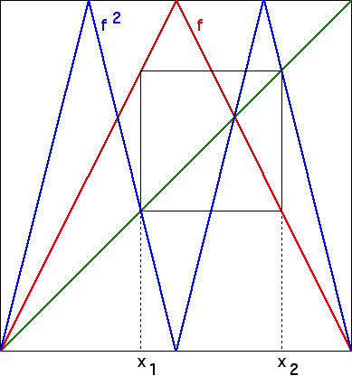

| The fixed points of f can be found by a simple geometric property: they are the intersections of the graph of f and the diagonal. |
| Cycles of f can be detected geometrically, by observing that points of an
|
| For example, suppose |
| f2(x1) = f(f(x1)) = f(x2) = x1 |
|  |
| Suppose x* is a fixed point of f2. Then x* might |
| belong to a 2-cycle of f, or |
| be a fixed point of f: if |
| Suppose x* is a fixed point of f3. Then x* might |
| belong to a 3-cycle of f, or |
| be a fixed point of f |
| Suppose x* is a fixed point of f4. Then x* might |
| belong to a 4-cycle of f, or |
| belong to a 2-cycle of f: if |
| be a fixed point of f |
| In general, if x* is a fixed point of fn, then x* belongs to an
|
| As a consequence, if x* is a fixed point of fp and p is prime,
then x* belongs to a |
Return to dynamics and number theory.